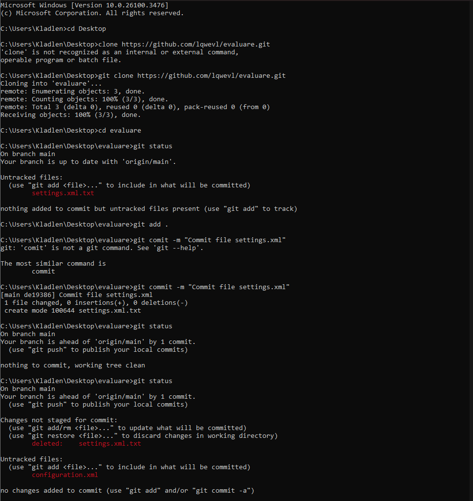
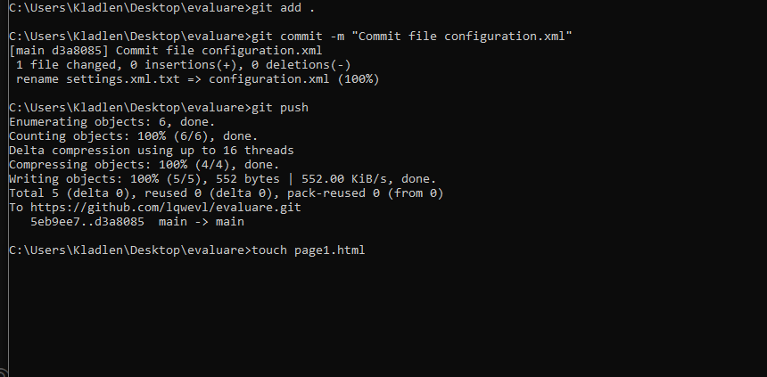
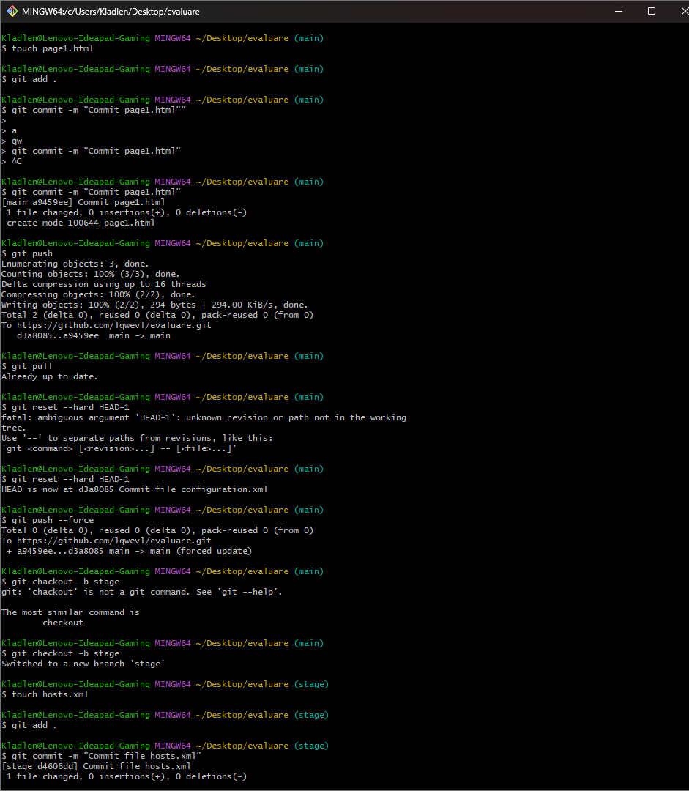
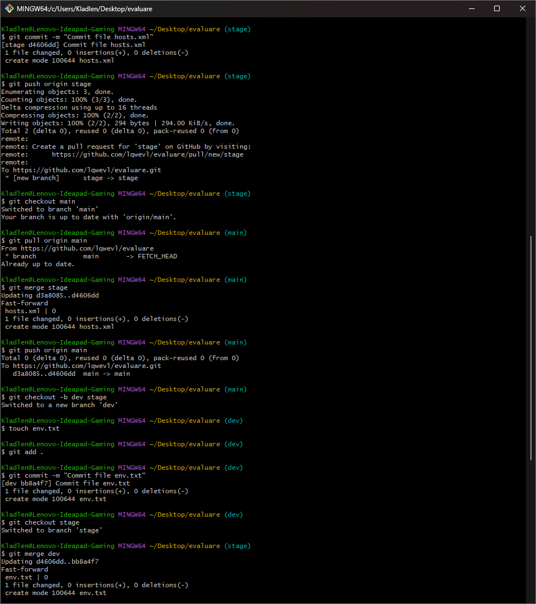
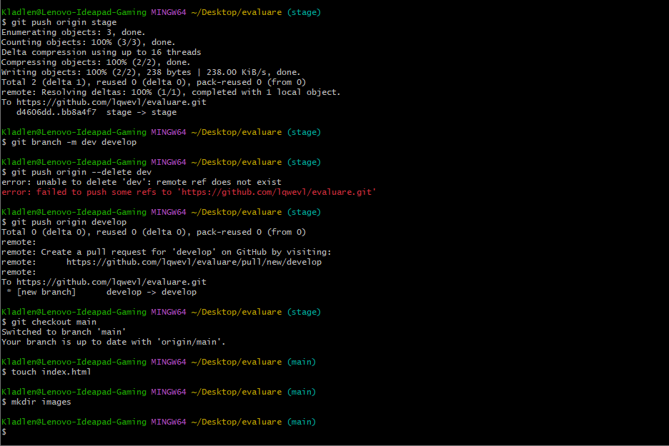

Evaluare Nr.2
I. Commit
- Creati repository Evaluare Nr2 pe github….2p
- Adaugati in acel repository fis index.ev.2..html….2p
- Clonati acel repository….2p
- Adaugati local fis settings.xml….2p
- Faceti commit la fis creat, comentariul Commit file settings.xml….2p
- Redenumiti fis din settings.xml in configuration.xml….2p
- Faceti commit la fis creat, comentariul Commit configuration.xml….2p
- Modificati comentariul pentru ultimul commit in Commit file configuration.xml….2p
- Transferati toate modificarile in repository remote….2p
- Evaluați rezultatul….2p

II. Commit
- Adaugati remote fis page1.html ….2p
- Actualizati repository local….2p
- Reveniti la Commit file configuration.xml….2p
- Actualizati repository remote….2p
- Evaluați rezultatul….2p

I. Branch
- Creati remote branch stage din master….2p
- Creati fis hosts.xml in acest branch….2p
- Commit la fis, comentariul Commit file hosts.xml….2p
- Actualizati repository local….2p
- Adaugati modificari din stage in master, local si remote.….2p
- Evaluați rezultatul….2p

II. Branch
- Creati local branch dev din stage….2p
- Creati fis env.txt….2p
- Faceti commit la fis, comentariu Commit file env.txt….2p
- Adaugati modificari din dev in stage….2p
- Actualizati repository remote….2p
- Evaluați rezultatul….2p

III. Branch
- Redenumiti local branch dev in develop….2p
- Actualizati repository remote….2p
- Evaluați rezultatul….2p
